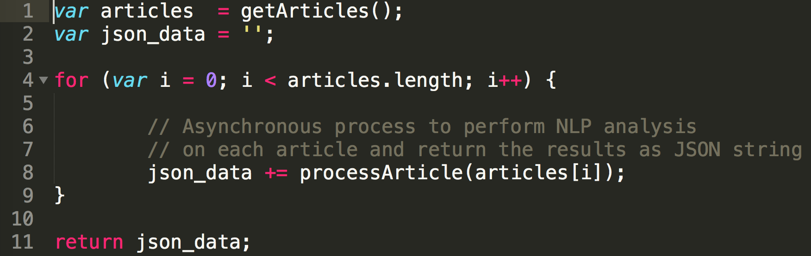

Leg 7: Update App & Final Reflection
Update v1.2

- Added a splash screen that displays while app content is loading
- We noticed that it was weird to have a blank screen displaying for a second or two while the app makes HTTP requests to our server, so we added this screen in to help smooth the app flow out
- Overhauled the UI/UX, shifting towards a sleeker dark color palette
- Based on some feedback we received from peers, most people tended to like the darker color palette in comparison to a bland white one
- Ensured that the colors fit with some of our graphics on the Google Play Store and splash screen
- Added a "TRENDING TOPICS" homepage that displays cached data on relevant news topics
- On launch, the app makes a call to our server to get data for the top trending topics
- We decided to implement this feature to try and combat a lot of the negative feedback we received with respect to latency
- By giving users articles and analysis on the top five trending topics, we hope to avoid some of the bottleneck that happens when you make individual HTTP requests for specific topics
- Patched server bugs to reduce crashes on request
- Started using a library called 'forever' that handles restarting the server back up on crash
- Now using GCP App Engine instead of Compute Engine => we can handle multiple requests at a time!
Brendan's Reflection
What did you learn technically?
Throughout this course, I learned a few technical skills that I can carry forward with my in my career as a developer. Working with React Native forced me to learn how to work with new frameworks ... which often aren't as clean-cut as people make them out to be. Additionally, I learned about the real fundamentals of mobile dev: views, activities, navigation, etc. -- all of which will not be changing anytime soon. Lastly, I learned more about natural language processing since it was specific to Neural News. While I may not go much further down the rabbit hole of NLP/ML, getting a small taste of it was really cool, and I'm glad that I now have a base-level understanding of these technical concepts.
What did you learn professionally?
In tackling a large-scope group project like this, I am able to walk away with several professional skills that will be invaluable to me. First, being able to identify the strengths of each group member and divide up the project work in the best way possible is an integral component of work in the real world. Also, keeping a running engineering blog forced me to really internalize the app's direction to the point where I could communicate it verbally as well as in writing.
What do you wish Ming had done differently?
I think that a Piazza forum would have been helpful for groups that were working with similar technologies to overcome the same hurdles that everyone runs into.
If you were to do this all over again, what would you do differently?
I would have limited the scope of our project so that we wouldn't get so overwhelmed trying to get everything to work perfectly all at once. Also, I would have chosen to use Amazon Web Services (AWS) instead of Google Cloud Products (GCP) because GCP was a nightmare to work with at times.
If you could make one change to this Mobile Development course, what would it be and why?
Perhaps including some labs to teach fundamentals in the first weeks of the course would be helpful with ramping everyone up to speed. TinyApp was a good intro, but if everyone had been forced to iterate on their TinyApp by adding HTTP requests, UI libraries, etc. I think it would have cleared up a lot of the struggles that we faced later on in the semester with our own projects.
Charles' Reflection
What did you learn technically?
There are so many technical things I learned throughout this course. Porbably the biggest thing that I learned was how to design a web server. That's something I had had no experience with before, and was sort of just thrown into. We first used Node, and then migrated to Flask, so it was really valuable to learn both frameworks. One of the other huge technicl skills I learned from this project was designing the articecture for an application. This app was definitely end to end, and learning about the problems that come at every part of the stack. This large scope project really forced me to design well, so all the pieces fit together nicely. Another thing I learned was the power, but yet also downfalls, of third party APIs. Working with the Google Cloud Platform was certainly a double-edged sword. They provided us great NLP APIs and the fast, App Engine web server, but not without a great deal of pain along the way.
What did you learn professionally?
I learned a lot about understanding the user. The user is the most important person to please, and when you're working on your own project, it's easy to get wrapped up in ideas that might only satisfy you. We had to make a lot of decisions, many of which came down to very business-like choices: what's going to make a user want to use our app a lot? Our update included a huge necessary UI change, which not only changed color themes and graphic design, but also usability and features. It was an important skill to learn how to take off the developer hat and look at the app through the eyes of a user.
What do you wish Ming had done differently?
Piazza would have been a great tool to use, because then people could have shared their successes and failures with Android Studio, React Native, and other third party tools like databases, geo-location or other APIs, web server stuff, anything like that.
If you were to do this all over again, what would you do differently?
We switched around server options a lot, starting with Heroku, then moving to Google's Compute Engine, and then to the App Engine. And we also switched web frameworks from Node to Flask. So one thing that would have made this project better was to do more research on different server options and make a more informed decision about how design our server in the beginning. Then we would have been able to focus more on improving the functionality of our server, rather than trying to figure out how to switch platforms and frameworks.
If you could make one change to this Mobile Development course, what would it be and why?
I think labs would be a great addition. Just some time to spend working in class, and you'd be there to answer any questions or give advice. I think also more discussion along the way about groups' apps and how their progress was going. I think it would have been cool for every group to give a 2-3 min flash talk every 2 weeks about what they had been working on. That way, I would know more about other apps and be able to give and recieve more feedback.
13 December 2017
Migration to the App Engine
The past week has been spent moving our web server from GCP's Compute Engine to GCP's App Engine. We also changed our framework from Node to Flask. There were many reasons for this change. First, the Compute Engine server was causing problems because we hadn't set up handling for multiple requests. It was essentially just a VM, with no abstraction to help us deploy our server to handle load balancing and multiple requests. We needed App Engine to help us with this. We also needed to move to Flask because we had been using Python scripts to do data analysis, and it just didn't make sense to keep calling the Python scripts from our Node scripts. Python was best for text processing, so it made sense to move to Flask.
I only have good things to say about Flask. Python is such an elegant and readable language, and building a web server in Python is very nice. Flask is an easy framework to learn, especially for someone like me who hasn't had much web experience.
GCP App Engine, however, had many annoyances. First, there were many problems with versions of Python libraries. Libraries had to be installed directly in our app directory, and a certain dependency of Flask was conflicting with App Engine. It didn't support past a certain version, and so we had to downgrade, even though App Engine advertises that it supports the version of Flask which automatically installed the unsupported version of the dependency. Another difficult thing was it didn't support the Google Natrual Language API Python Client directly (which is so stupid). So instead, we had to make direct http requests to the API.
Another thing was that the App Engine Python environment didn't support any C extensions or other binary files like shared object files that Python can usually understand. This stopped us from using the gRPC Python library for requests that required a shared object file. Other than these difficulties, I do think App Engine supplied a great platform to deploy our web server.
4 December 2017
Bugs, crashes, and frustration
As seen in our Leg 6 entry, many users experienced significant difficulty when trying to use our app. We've been tracking these issues on Crashlytics, and it's clear that there is a lot for us to fix. Some of these bugs seem to be easier to fix -- null pointer exceptions mainly -- but others appear to be so obscure that it is a bit daunting just thinking about them. Since we built Neural News with React Native, most of the under-the-hood operations were abstracted from us, and as a result we aren't too sure about how to tackle some of the more cryptic bugs.
The other major issue with the app was latency on the server side. Since the operations our server needs to do are non-trivial, we've been having a hard time with shaving off time per request. We need to query Azure for articles => extract the text from each article => analyze each article => make sense of the NLP data => resolve the request. We know that the easiest way to fix this would be through caching, but we ultimately decided that building a proper database for caching was out of the scope of this course. However, we will continue to work on the app over Winter Break to hopefully implement a functioning database.
Getting such harsh feedback was quite sobering. The reality is that we're all so accustomed to using mobile apps that respond instantly that we are now too impatient to wait a few seconds for our search to resolve. So, it is clear to us that mobile is a very difficult frontier to take on with respect to development, since the products must be extremely air-tight.
Leg 6: App Reviews
Feedback Received
- Change flow to continuous feed with articles on home page.
- Add further entity analysis when you click on an entity.
- Open up browser within app
- Sort articles more — the average should be neutral.
- "Can't give a very thorough review, as the app crashed after I try to search a topic."
- "Your app has a lot of really cool features and is easy to use. The overview of each article’s stance on a given issue is really helpful and innovative! Our only suggestion would be to work on the design of your app a bit. Otherwise, it looks great!"
- "Neat icon. I am really impressed with the app's ability to differentiate bias in the article through NLP."
- "I like how the recent searches are shown on the front page. However, the app crashes when I click on one of them, or when I make a search :("
- "The whole app is great. It is impressive to have such rich news resources and can link to the original news by one click. However, the app will crush when I tried search something like "nature", and it has a large probability to get crush when searching news about "Donald Trump", which is confusing considering that this keyword is in the "Trending Topics"."
- "A great example that combines the mobile app with NLP.
When I click the one “trending topic” in the homepage, it crashed. But I tried other trending topics, it works fine.
Suggestion: It can have a link to somewhere that can display all the related news instead of just showing the 5 news. Also, for all the trending topic, it would be nicer that each topic is just a link, not a “button”."
- "Cool icon, and I like the simple banner.
It crashed when I clicked on a trending topic.
It crashed when I tried to search for “meghan markle” (or any other search term)."
- "The trending topics buttons overlap on the main screen, consider adding some padding between buttons. I love that I can easily pick from the trending topic of the day and it’s pretty accurate. I love the user interface where I can swipe to view other stories. You should add some padding around the title next to the thumbnail though, for one of my articles the left side of the title was cut off. One improvement that could be made is allowing the user to save an article to read later. Overall awesome job!"
- "I think the icon looks very nice. At first I thought that clicking a topic made the app freeze and be unresponsive, but it turns out it was just really slow. It would be nice to have some sort of loading bar so I would know it's doing something. The first time I tried to search for a topic I got an alert that said "error {}". A more instructive error message would be nice. I was able to search for a topic, but then I tried to search for more and the app kept crashing"
- "Very well designed, seems to get analysis right from a surface viewing"
- "First of, I really love this app idea. I have seen Brendan developing this app, and this looks incredible, and works well in iOS. However, when I have downloaded this app to my device (Google Pixel, Android 8.0), the first thing I noticed is the styling for the first page is a little bit off. Android devices have different default color, so... be sure to style it, even if it looks fine without much styling. Also the app crash 2 times at the beginning, and you should find two crashlytic emails in your mail box tomorrow morning.... Generally, GREAT APP ❤️"
27 November 2017
Design Change?
Over the Thanksgiving break we've been toying with the idea of changing the flow of Neural News a considerable amount. After using it a bit and getting some limited feedback from friends and family, we are realizing that the design may be hindering the application. One of the biggest negatives is that Neural News is not really a feed; the user opens the app, and then must either already know what they want to search for or be enticed enough by a simple trending topic text. Then after a search, another page loads and they finally get their news, but in a horizontal swipe arrangement.
This is a strange flow. We think it would be best for the user if the news was right in front of them immediately when they open the app. We want to minimize the amount of page changes and loading screens, and instead employ the use of bubbles that expand when clicked to show more information. We can still organize news by trending topic, but present articles as well as the topics on the home page. It continues to seem more and more clear that a continuous feed is the most user-friendly design for Neural News.
20 November 2017
Compute Engine vs. App Engine
In the past couple weeks, we've been working to move to Google Cloud, and we made it! However, as with all things we now have more trade-offs to consider now that we're on the cloud. Google offers two cloud products that seem to suit our needs: the compute engine and the app engine. In short, the compute engine is just that -- a remote machine that you can SSH into to crunch numbers, host servers, etc. The app engine is designed with a wrapper on the raw compute engine in such a way that abstracts the programmer from some of the scalability concerns that come into play when building a web server.
At first, we started out on the compute engine platform. However, we quickly found out how much more tedious it was to work with a raw machine. Installing dependencies, ensuring the server would always stay up, and managing multiple requests at the same time became a bit overwhelming. Ultimately, we ended up getting to the point where the server is constantly running on the compute engine, but we haven't gotten it to handle multiple requests at a time yet. So, we plan to migrate to the app engine platform soon -- perhaps after this course will be over, but hopefully sooner. Oh the cloud!
Leg 5: To the Play Store!
For the fifth leg of this course, we were posed with the exciting challenge of pushing our app to the Google Play Store. As we covered in the previous entry, a lot of this process was quite nightmarish due to React Native's unavoidable headaches. However, we managed to get the whole thing working and it is now currently live on the Google Play Store. Even so, there are a few things that we screwed up that we need to fix... as always.
To be fair, most of the problems we're discovering now are largely aesthetic issues. For example, when you download the app to your phone, it comes up as 'neuralnews' on the phone, when we expected it to read as 'Neural News'. It turns out that this is something that you need to program into the APK -- we had originally thought that creating the Google Play Store listing would take care of this, but such was not the case. Also, we now see that we need to find the code in the app that designates which logos will display once the app has been downloaded to a phone. As it stands now, it is using the icon that was uploaded to the Play Store, but we intended it to be using a different one. Small problems, but they need to be fixed sooner than later, as the visual appearance of the app is almost more important than the functionality.
13 November 2017
Pushing to the Google Play Store
This week, we were tasked with what we've all been waiting for: pushing our finished app to the Google Play Store. Before doing so, we had to make a few iterations on our MVP (mainly in the realm of UI/UX). It was exciting to begin this leg, but we quickly realized how much of a pain getting things onto the Google Play Store can be.
First, we couldn't believe how many images we needed to upload. Screen shots seem valid enough, but having to upload icons with certain pixel densities, alpha channel requirements, dimensions, and bit requirements became a bit overwhelming -- if only we had a designer who could have helped us out with this! Luckily, we found a service called Android Asset Studio that makes the process fairly painless. The web application allows you to upload and tweak images to be exported in the correct formats expected by the Google Play Store.
Next, generating an APK. Since we have been building in React Native, generating an APK is not as simple as it would be in Android Studio. However, we followed Facebook's guide on the matter, which helped alleviate some of the complicated behind-the-scenes processes.
All in all, it is clear to us how difficult it is to not only push an app to the Google Play Store, but also how important advertising and marketing are in the world of mobile development. No apps with low quality images will ever explode in popularity, which is perhaps why many companies invest so heavily in UI/UX designers to ensure that this side of the business is in good shape.
6 November 2017
Moving to Google Cloud?
This week, we have been wrestling with the idea of moving away from Heroku... sooner rather than later. The issues with Heroku are as follows:
- It is really, really slow. The space allotted for our server is not constantly up and running since we are on the free plan, and as a result the first wake-up call to the server can take up to twenty seconds, which is not practical in the slightest for a news app.
- We have to play by their rules. In order to run Python scripts, we have to jump through hoops to set up requirements for the server and create multiple builds that allow us to scratch the surface of modifying the server environment.
- Our dependencies are limited. We have to depend on Aylien for our entity extraction and article extraction, which each take up around 15 calls per query on our app. Since we are limited to 1,000 calls a day, this is starting to become unreasonable. Other services like Amazon Web Services and Google Cloud offer these types of APIs for free...if you use their servers!
So, now we're starting to look at Google Cloud as the next platform for our server space. Google Cloud would give us free, unlimited access to Google APIs that perform (likely better) sentiment analysis, entity extraction, and article extraction. We still have to weigh some factors, but it seems like the next step moving forward with our app.
Leg 4: Testing and Security Audit
Lint
The initial scans of our two main JavaScript files are found in the tests folder at the root of our mobile app repository. After making the appropriate changes, we re-ran Lint on the files and saved the outputs of those scans to the same tests folder.
It should be noted that in nearly all of the output files (denoted with an _2 at the end of the file name), there were a significant amount of false-positives. While we were able to fix the majority of the errors and warnings that eslint was able to provide us, there were many that simply did not make sense. For example, the first error in the lint_index_2.txt file says: 'Fetch' is defined but never used. However, we do use the Fetch library by calling its main fetch function to make HTTP GET requests to our server.
Crashlytics
Crashlytics is an extremely powerful tool. It's a light-weight crash-testing solution to easily identify the causes of a crash. Fabric's analytics engine gives insight into where the crash is coming from, giving detailed reports of the crash. Frtunately, our app is not having any problems with crashing, but once we expand our functionality, this will beome a very useful tool.
Veracode Analysis Center
After using Veracode's static analysis scan utility, I am completely in love with Veracode. The interface was very easy to use, and the end results of running the scan revealed several ways (in a wonderfully easy-to-read format, mind you) that we can improve our app from a security perspective. The generated file can be found at ./tests/veracode_tests/DetailedReport_Neural_News_5_Nov_2017.pdf
As you can see in the Summary of Flaws panel, Neural News had only low severity security flaws. The Flaw Types by Severity and Category breaks down where most of our flaws occurred. In total, 11 of the flaws were related to error handling, and 4 were due to information leakage. Going forward, we now know that we need to ensure that all of the appropriate function calls have error handling: API calls, SDK library functions, asynchronous methods, etc. And, we now know that we need to protect our API keys by accessing them from a file rather than having them hard-coded into the JavaScript.
High-Tech Bridge Security Scan
After testing our native app code, we decided that we needed to test our server code. So we did a security scan using High-Tech Bridge's Web Server Security Test. Unfortunately, we did not perform very well on the security test. We recieved an F. Our main problem is that we are missing HTTP headers to increase security and prevent vulnerabilities. We are missing the following headers:
- X-FRAME-OPTIONS
- X-XSS-PROTECTION
- X-CONTENT-TYPE-OPTIONS
- CONTENT-SECURITY-POLICY
Sending these response headers is an easy way to increase the security of our web server.
31 October 2017
Testing the Server
Overview
After finally getting a working version of the server up and running last week, this week it was time to put it to the test. We ran a handful of tests to ensure that things were working as expected, and we realized that the 'working version of the server' was not as air-tight as we had hoped.
Challenges
One of the main problems we anticiapted when it came to testing were our API limits. As we depend on Aylien's SDK for both entity and article extraction, it is not feasible to blast the server with hundreds of automated tests, as this would near instantly drain up our API calls for the day.
So, we started out slowly. First, we tested querying for easy news entities, like Donald Trump, Hillary Clinton, and Bernie Sanders. Testing slowly revealed subtle, nuanced errors that we were able to correct. It also revealed some nastier, more sinister fundamental flaws in our server design.
For instance, we realized that asynchronous JavaScript can become a mess... even when you're doing it the right way. At first, we were iterating over a list of articles and performing asynchronous tasks (i.e. extracting the article, calling Python scripts, etc.) on them in succession. As it turns out, this can lead to overwriting of data, as the later iterations will take precedence over the earlier ones. This manifested in some of the testing JSON files we generated, which looked like the following:
As you can see, for these three articles the title, URL, and news source all have the same values, which was not what we wanted. After some grueling work, we identified that this iterative mess was causing problems:

So, we turned this into a somewhat more logical process that took advantage of 'Q,' a wrapper on JavaScript's 'Promise' library.
Q Promise Library
While we could have chosen to use the native Promise library, we opted for the Q library for a few reasons. First, it was much, much easier to use. The syntax makes more logical sense, and the code becomes a lot flatter instead of extending to the right of the text editor. Also, the library gives you implicit error propagation with 'try, catch, finally.' These make the code very readable and easy to maintain, all while still giving us the asynchronous functionality our server needed. So, our code now looks more like this, which works as expected:
27 October 2017
Data Collection?
This week, we have been toying with the idea of setting up a database for several reasons:
- Caching makes things faster. As we learned in Mark Sheldon's COMP-0040, caching can optimize the performance of programs immensely. In our case, perhaps caching already-generated NLP analysis of articles related to a given query could help speed things up, as Heroku is currently proving to be a bit slow.
- Collecting user data => profit? It's no secret that political data is extremely valuable to candidates, researchers, marketing firms, etc. As a result, perhaps it would be wise to do the following: gather cursory political affiliation data on first load of the app => see which articles they tend to click on => cache this in a database for later analysis.
- Our APIs are tying our hands. Since we only have 1,000 Aylien API calls per day to work with at the moment, utilizing some caching could help us avoid the ~15 API calls per query that are typically needed to serve a response to the client.
We still have to do a good amount of research into which databases would be best for our needs, but we will likely go with either MongoDB or SQL given their popularity and ease of integration. Stay tuned.
3. Minimum Viable Product
Critical Features of Neural News

Searching
Searching is the most important feature of the app, as the whole point is to allow users to search for the news content that they want. So, we used a couple libraries to help get the job done: React Native Search Box for the search bar and Fetch for making HTTP GET requests to our server. Users can enter a string and press search or simply click on one of the 'Trending Topics' listed on the landing page to be redirected to a screen that displays all of the information we serve.
Displaying Natural Language Processing Data
Once our server has resolved the user's request, our app redirects the user to a search results page, where they are presented with -- at the moment -- 3 articles and their corresponding natural language processing data. The user sees an image with the article's news source logo, the article's title, the article's brief description, and at the bottom a list of the top -- at the moment -- three entities and their respective polarities. We choose to display the polarities using images that map to discrete values to make it more easy to understand the biases present in the article for a given entity.
Linking to Original Article
Tapping on the logo at the top opens the mobile device's default browser and links to the article so that the user can read the article if he desires.
20 October 2017
Building the Server
Overview
We decided to use Node.js to build our server since there are pre-existing SDKs for the services we want to use (Aylien, mainly) for Neural News. The process of building the server consisted of developing a /query HTTP GET route that serves the natural language processing data paired with articles to the client, our app.
Challenges
We learned that asynchronous calls are a mess. In several places, we have to make asynchronous calls that need to happen sequentially, but the promises aren't quite working as we expect them to. At this point, the server really isn't fully working. There's some bugs related to asynchronous calls not resolving before we send a response back to the client, and we will have to do some investigating into why our current methodology isn't working. However, we have been able to generate some dummy test data that we can now use when testing out the front-end.
13 October 2017
Confirming User Bias?
This week, we talked about a philosophical, ethical question related to our app. The goal of Neural News is to, given a search query, provide users with articles that cover as many opinions of the political spectrum as possible. So, the naive algorithm would result in serving some left articles, some right, and some neutral. However, this is not how our competitors do it.
For example, Google's news website serves its users content that they predict the users will like ... thus confirming the user's already held bias. That is to say, if a given user consistently responds positively to articles that applaud the U.S. Senate, then Google will strive to serve that user articles that talk about the Senate positively. Do we want to do this? Is this strategy more effective in getting returning users?
Ultimately, to us what makes Neural News different is that it should and must serve articles that cover the whole political spectrum. Perhaps this may mean that we won't have as many users as we would otherwise, but that would compromise our original intention of the app.
6 October 2017
Further News Analysis
We took the week to talk design for the future, specifically related to how we want to portray the NLP news analysis. We've been asking ourselves the question:
"Why would people want to use our app?"
We want to make a news app that people will choose over other ways to get news (Facebook, Google, etc.). This means our analysis has to be really useful. While entity sentiment is a good start, and certainly useful, it's really only the tip of the iceberg. Some bigger features we are planning on adding are:
- Complete network analysis - Analyze how different networks cover different news topics, and make comparisions between them.
- Polling users - collect data about user demographics, political leanings, general opinions (some small version of something similar to ISideWith.com). Use this data for further statistical analysis and machine learning models.
- Include "do you agree?" buttons for users to rate the accuracy of our analysis
- Develop some sort of "bias" index, which is related to entity sentiment, political leaning, and how much a stations coverage of something differs from others.
2. Basic Foundation
Key Views as Wireframes
Home Screen
Search Results

Architecture of the Platform

Third Party APIs
Third Party Libraries & Packages
29 September 2017
Building the Front End
Overview
This week we built a minimal front end version of the app, without the use of any APIs.
Challenges
One of the biggest problems we ran into was the scope of the this variable in React Native. This came up specifically when dealing with searching. In our HomeScreen class, we have a list of trending topics, which are buttons with text. We wanted the Button component to reference our onSearch function, which takes the search query as a parameter and navigates to the search results page. We had something like this:

This of course was a problem. We had no idea which this was what. The first this was supposed to reference the HomeScreen class, and the second this was supposed to reference the Button component. It turned out that the first this was referencing the Button, and the second this was undefined. To fix this problem we created some new classes.

This way we could pass the onSearch function as a prop down to the TrendingTopics class and then again down to the TrendingTopic class. This results in no ambiguity of this variables.
1. Proposal and Requirements
What is the need?
With the internet's huge catalog of news sources, it is all too easy to only read news that confirms your own bias. Too often, people will only listen to what Fox has to say, or on what Huffington Post has to offer. Consumers need more diverse news sources, and they need to understand the implicit biases of their sources. By allowing users to search for news and get a diverse spread of results, along with natural language analysis of the articles' content, we aim to empower the individual to be more informed of the information they extract from the media.
Who is the audience?
Everyone who cares about the news -- especially those looking for a more informed news experience -- can benefit from our app.
Who are the supporters and stakeholders?
Noah Weinflash, junior at Tufts University who identifies as a liberal, strongly supports this app: "We need more people to value diverse opinions in their news, and we need an easy way to see both sides of the issues."
Jack Winston, senior at Boston College who identifies as a conservative, strongly supports this app: "There is a clear media bias that has existed for so long. A news portal that can objectively assess the bias of news articles can finally bring light to the serious media problem, and force people to be more critical of seemingly 'neutral' sources."
Belle Newman, junior at Tufts University who identifies as independent, strongly supports this app: "With our nation divided and 'fake news' on both sides, there is an urgent need to restore trust in the media."
People of all political ideologies support this app and idea. This has the capability to heal the great divide in our country, and to bring understanding and open-mindedness back into popularity.
What is the app's core functionality?
Neural News promises to deliver news articles from diverse sources upon search. Then, it will provide natural language analysis of each article based on its sentiment and content.
What is the app's secondary functionality?
If time permits, we would like to support additional sources like Facebook and Twitter posts. Also, a stretch goal would be to eventually provide an analysis of the public opinion by looking at data from the articles' comments, social media posts, etc.
What features of the mobile device will the app use?
At this point, we do not foresee the app needing to use any special features of the mobile device aside from Internet access. However, we may use contacts or SMS in order to allow the user to connect with other users.
What are the app's limitations?
There are two main limitations of the app. First, the speed of API calls / computation of our analysis: since we depend on 3rd party APIs and libraries to perform all of the natural language analysis, it is possible that the app's load time and search feature will have some latency. Second, the accuracy of our sentiment analysis: even though the APIs we are using are very sophisticated, NLP is far from being perfect. Thus, we understand that our analysis can only be so accurate.